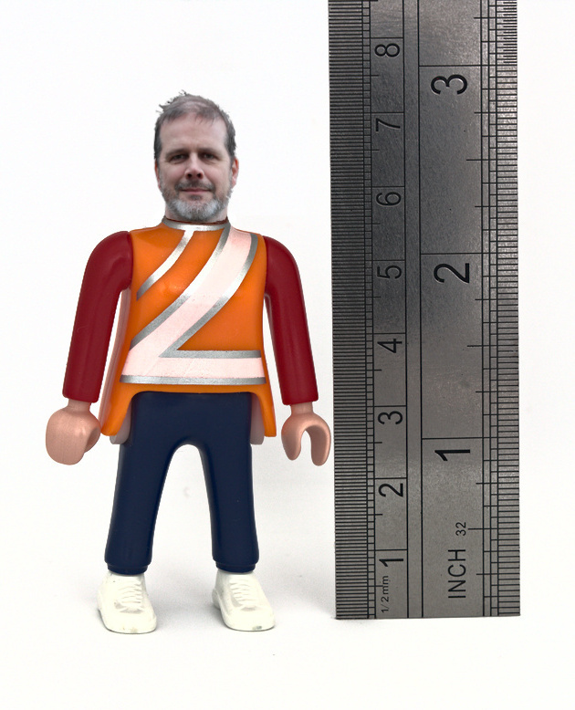
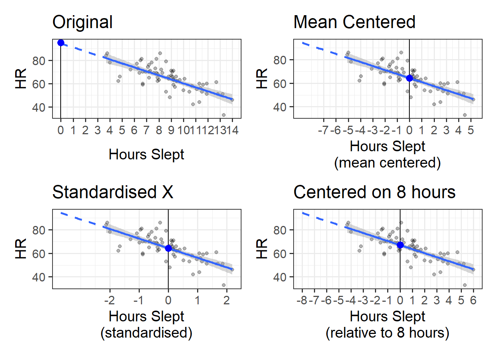
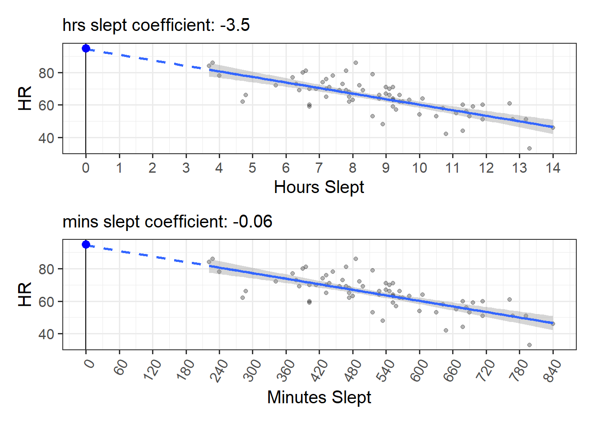
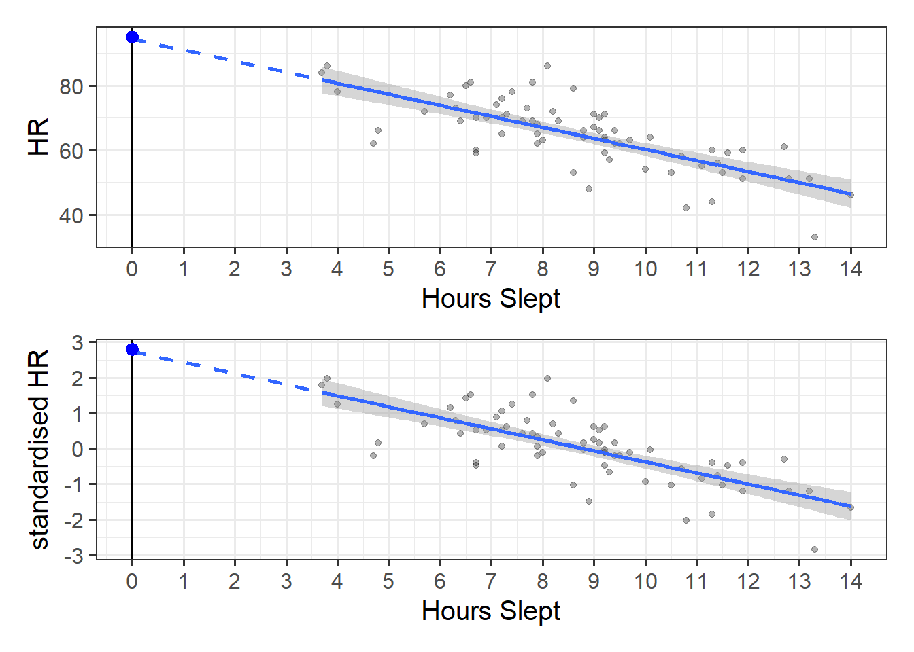
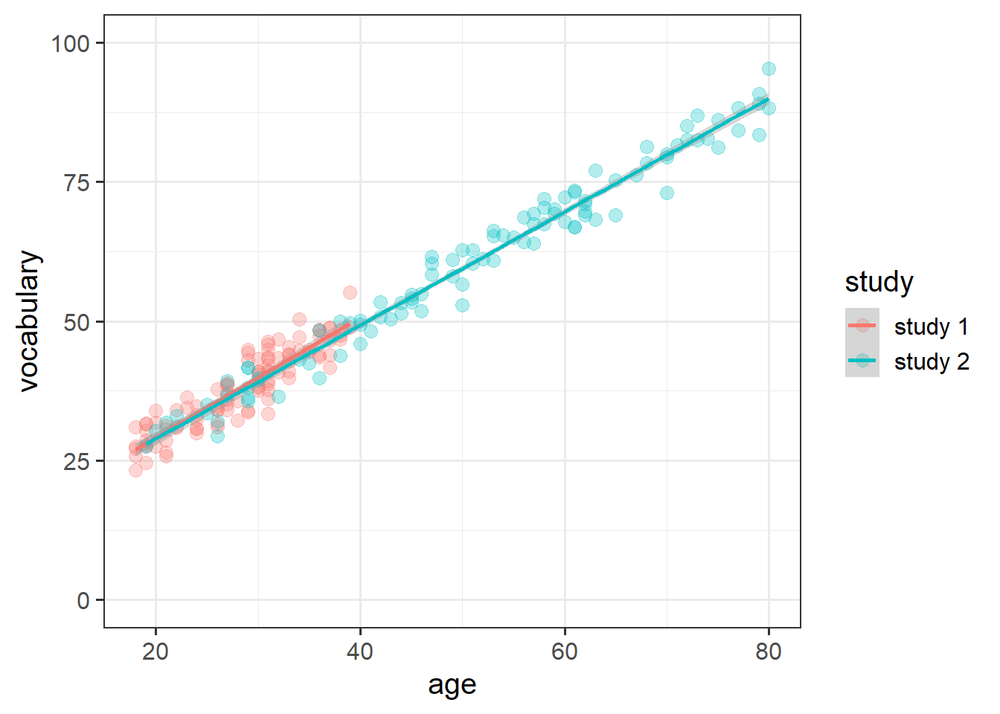

For this section we’re going to play with some random data looking at whether peoples’ resting heart rates depend on how much sleep they get.
Our data contains 70 people, for which we have a variety of measures. The only ones we are going to concern ourselves with are heart rate (HR) and hours slept (hrs_sleep), but there are plenty of other ones for you to play around with if you like
# A tibble: 6 × 8
name age height shoe_size hrs_sleep ampm smoke HR
<chr> <dbl> <dbl> <dbl> <dbl> <chr> <chr> <dbl>
1 Biancha 42 151. 39 14 pm n 46
2 Werner 71 160. 39 6.3 pm n 73
3 Martin NA 182 43 9.5 pm n 62
4 Danika 60 181. 35 9.1 am n 66
5 Thuy Minh 25 178 42 11.3 am n 44
6 Jena 22 169. 44 11.5 pm n 53
Centering/Scaling/Standardising
There are many transformations we can do to a continuous variable, but far and away the most common ones are centering and scaling.
Centering
Centering simply means moving the entire distribution to be centered on some new value. We achieve this by subtracting our desired center from each value of a variable.
Mean-centering
A common option is to mean center (i.e. to subtract the mean from each value). This makes our new values all relative to the mean.
In our heart-rates data, the average hours of sleep is 8.8. If we subtract that from each person’s hours of sleep, we get the mean-centered hours slept (the hrs_sleepC column below). You can see that the first person in our data (Biancha) sleeps 14 hours a night, which is (according to the hrs_sleepC variable) 5.2 hours more than average.
hrdat |>mutate(hrs_sleepC = hrs_sleep -mean(hrs_sleep), .after = hrs_sleep # put new column after the hrs_sleep variable ) |>head(5L) # just show the first 5
# A tibble: 5 × 9
name age height shoe_size hrs_sleep hrs_sleepC ampm smoke HR
<chr> <dbl> <dbl> <dbl> <dbl> <dbl> <chr> <chr> <dbl>
1 Biancha 42 151. 39 14 5.23 pm n 46
2 Werner 71 160. 39 6.3 -2.47 pm n 73
3 Martin NA 182 43 9.5 0.726 pm n 62
4 Danika 60 181. 35 9.1 0.326 am n 66
5 Thuy Minh 25 178 42 11.3 2.53 am n 44
We can center a variable on other things, such as the minimum or maximum value of the scale we are using, or some judiciously chosen value of interest.
Scaling
Scaling changes the units of the variable, and we do this by dividing the observations by some value. E.g., moving from “36 months” to “3 years” involves multiplying (scaling) the value by 1/12.
Standardising
Far and away the most common transformation that involves scaling is called ‘standardisation’. This involves subtracting the mean and then dividing by the standard deviation. So standardisation centers on the sample mean and scales by the sample standard deviation.
The process of standardisation (subtracting the mean and dividing by the standard deviation) will make it so that all our values are expressed in terms of “how many standard deviations above/below the mean”. This can be useful because it puts variables on the same conceptual scale (units of standard deviation).
Martin’s height
Consider Martin. He goes on a lot about people’s heights. He is 182cm tall, and he has size 43 feet (in EU sizes). Is Martin’s height more unusual than the size of his feet? If we standardise both variables, we can see that he is 1.2 standard deviations above average height, but only .56 standard deviations above average in shoe size.
hrdat |>mutate(Zheight = (height-mean(height))/sd(height), Zshoe = (shoe_size-mean(shoe_size))/sd(shoe_size), .after = shoe_size ) |>head(5L) # just show the first 5

# A tibble: 5 × 10
name age height shoe_size Zheight Zshoe hrs_sleep ampm smoke HR
<chr> <dbl> <dbl> <dbl> <dbl> <dbl> <dbl> <chr> <chr> <dbl>
1 Biancha 42 151. 39 -1.52 -0.802 14 pm n 46
2 Werner 71 160. 39 -0.688 -0.802 6.3 pm n 73
3 Martin NA 182 43 1.19 0.559 9.5 pm n 62
4 Danika 60 181. 35 1.08 -2.16 9.1 am n 66
5 Thuy Minh 25 178 42 0.843 0.219 11.3 am n 44
handy functions
We can easily center and scale in R by just performing those calculations using something like (var - mean(var)) / sd(var), but there is a handy function that can do it quickly for us:
We can actually use these inside the call to the lm() function, e.g.
lm(HR ~scale(hrs_sleep), data = hrdat)
Centering and Scaling Predictors
We know that we can transform our variables in lots of ways, but how does this choice affect the models we are fitting? In short, it doesn’t affect our model, but it does change what we get out of it.
If we re-center a predictor on some new value (such as the mean), then all this does is change what “zero” means in our variable. This means that if we re-center a predictor in our linear model, the only thing that changes is our intercept. This is because the intercept is “when all predictors are zero”. And we are changing what “zero” represents!
When we scale a predictor, this will change the slope. Why? Because it changes what “moving 1” represents. So if we standardise a variable, it changes both the intercept and the slope. However, note that the significance of the slope remains exactly the same, we are only changing the units that we are using to expressing that slope.
For the remainder of this reading, we’re going to start with the model lm(HR ~ hrs_sleep), and then explore how different transformations to our variables change what we get out of the model. Because we are applying transformations to individual variables, all of the logic we’re about to see holds in multiple regression models too (i.e. it doesn’t matter how many independent predictors we have, all of the below stays the same).
In Figure 1 you can see our original model (top left), and then various transformations applied to our predictor. Note how these transformations don’t affect the model itself - the large blue point shows how we are changing where our intercept is estimated, but the slope of the line (and our uncertainty in slope) is the same in all four plots. These models are also shown below, along with a comparison to show that they are all identical in terms of model fit.

Figure 1: Centering and scaling predictors in linear regression models
Original
mod_orig <-lm(HR ~ hrs_sleep, data = hrdat)summary(mod_orig)
Call:
lm(formula = HR ~ hrs_sleep, data = hrdat)
...
Coefficients:
Estimate Std. Error t value Pr(>|t|)
(Intercept) 95.0552 3.2998 28.81 < 2e-16 ***
hrs_sleep -3.5035 0.3631 -9.65 2.3e-14 ***
(Intercept): estimated heart rate (HR) for someone who didn’t sleep at all
hrs_sleep: estimated change in HR for every 1 additional hour of sleep.
Mean centered X
mod_mc <-lm(HR ~scale(hrs_sleep, scale=FALSE), data = hrdat)summary(mod_mc)
(Intercept): estimated heart rate (HR) for someone who slept an average number of hours
hrs_sleep: estimated change in HR for every 1 additional hour of sleep.
Standardised X
mod_z <-lm(HR ~scale(hrs_sleep), data = hrdat)summary(mod_z)
Call:
lm(formula = HR ~ scale(hrs_sleep), data = hrdat)
...
Coefficients:
Estimate Std. Error t value Pr(>|t|)
(Intercept) 64.3143 0.8605 74.74 < 2e-16 ***
scale(hrs_sleep) -8.3636 0.8667 -9.65 2.3e-14 ***
(Intercept): estimated heart rate (HR) for someone who slept an average number of hours
hrs_sleep: estimated change in HR for every 1 additional standard deviation of sleep time
X Centered on 8
The function I() can be used to isolate a computation. The + and - symbols in linear models mean something (they are how we add predictors), so we can use I() here to just tell R to do the computation of hrs_sleep-8 on its own.
mod_8 <-lm(HR ~I(hrs_sleep-8), data = hrdat)summary(mod_8)
(Intercept): estimated heart rate (HR) for someone who slept 8 hours
hrs_sleep: estimated change in HR for every 1 additional hour of sleep.
Comparison
Normally, if models have different sets of predictors which are not nested (one model containing all of the predictors of the other model), then we can’t compare them with an F test.
However, in this case, the hrs_sleep variable is in every model (just transformed in some way), so we can do a comparison.
Note that the residual sums of squares for these models is identical - no model is explaining more variance than the other, because underlyingly they are all just the same model!
mod_orig <-lm(HR ~ hrs_sleep, data = hrdat)mod_mc <-lm(HR ~scale(hrs_sleep, scale=FALSE), data = hrdat)mod_z <-lm(HR ~scale(hrs_sleep), data = hrdat)mod_8 <-lm(HR ~I(hrs_sleep-8), data = hrdat)anova(mod_orig, mod_mc, mod_z, mod_8)
Analysis of Variance Table
Model 1: HR ~ hrs_sleep
Model 2: HR ~ scale(hrs_sleep, scale = FALSE)
Model 3: HR ~ scale(hrs_sleep)
Model 4: HR ~ I(hrs_sleep - 8)
Res.Df RSS Df Sum of Sq F Pr(>F)
1 68 3524.5
2 68 3524.5 0 -4.5475e-13
3 68 3524.5 0 0.0000e+00
4 68 3524.5 0 0.0000e+00
Transformations, pre/post
When we apply these transformations we can do so either during the process of fitting the model (e.g. by using scale() inside the lm() function as we have just seen). We can also do this prior to fitting the model, by creating a new variable using code like hrs_sleepZ = scale(hrs_sleep), and then using that variable in the model.
It is also possible to work out the slope for transformed variables after we’ve just fitted our original model. This is because when we scale a predictor, all that happens to our coefficient is that it gets scaled accordingly. Consider the example in Figure 2, where we change from using hours to minutes. To do this we can just multiply our hrs_sleep variable by 60 (so that, e.g., 1.5 hours becomes 90 minutes).
The coefficient from the model changes from
“change in HR for every 1 hour of sleep”
to
“change in HR for every 1 minute of sleep”
but we can actually do that calculation ourselves, because 1 minute is 1/60th of an hour. So we already know that \(\frac{\text{change in HR for every 1 hour of sleep}}{60}\) is the same thing as “change in HR for every 1 minute of sleep”.

Figure 2: Changing from hours_slept to minutes_slept will make our coefficient 1/60th of the size
The same applies when we standardise a predictor. Since standardising involves dividing a variable by its standard deviation, the coefficient for the standardised variable will be the original coefficient multiplied by the variable’s standard deviation.
Original coefficients lm(HR ~ hrs_sleep, data = hrdat)
coef(mod_orig)
(Intercept) hrs_sleep
95.055220 -3.503526
Standardised coefficients lm(HR ~ scale(hrs_sleep), data = hrdat)
coef(mod_z)
(Intercept) scale(hrs_sleep)
64.314286 -8.363635
The standard deviation of hrs_sleep we can calculate:
sd(hrdat$hrs_sleep)
[1] 2.387205
And we can move from the original coefficient to the standardised one!
# original coefficient multiplied by sd of hrs sleepcoef(mod_orig)[2] *sd(hrdat$hrs_sleep)
hrs_sleep
-8.363635
Scaling the outcome
We’ve seen what happens when we scale our predictors in a linear regression model, but what happens when we scale our outcome variable? If we tie it to our plots, all that happens is that the numbers on the y-axis will change (see Figure 3).
The model again is unchanged, but our coefficient will no longer be the “estimated change in beats per minute” but will be “the estimated change in standard deviations of heart rates”.
Our original coefficient was interpreted as heart rate decreasing by -3.5 beats per minute for every additional hour slept. By standardising the outcome (heart rates), then we just re-express that -3.5 in terms of “how many standard deviations?”. The standard deviation of heart rates in our data is 11, so the slope in terms of standard deviations should be \(\frac{-3.5}{11} = -0.32\). The interpretation of this number is simply that heart rates decrease by 0.32 standard deviations for every additional hour slept.

Figure 3: Scaling the outcome variable
Original
mod_orig <-lm(HR ~ hrs_sleep, data = hrdat)summary(mod_orig)
Call:
lm(formula = HR ~ hrs_sleep, data = hrdat)
...
Coefficients:
Estimate Std. Error t value Pr(>|t|)
(Intercept) 95.0552 3.2998 28.81 < 2e-16 ***
hrs_sleep -3.5035 0.3631 -9.65 2.3e-14 ***
(Intercept): estimated heart rate (HR) for someone who didn’t sleep at all
hrs_sleep: estimated change in HR for every 1 additional hour of sleep.
Standardised Y
mod_yz <-lm(scale(HR) ~ hrs_sleep, data = hrdat)summary(mod_yz)
Call:
lm(formula = scale(HR) ~ hrs_sleep, data = hrdat)
...
Coefficients:
Estimate Std. Error t value Pr(>|t|)
(Intercept) 2.7943 0.2999 9.316 9.1e-14 ***
hrs_sleep -0.3185 0.0330 -9.650 2.3e-14 ***
(Intercept): estimated number of standard deviations above average heart rate (HR) for someone who didn’t sleep at all
hrs_sleep: estimated change in standard deviations of HR for every 1 additional hour of sleep.
Standardised Coefficients
When we standardise variables in a regression model, it means we can talk about all our coefficients in terms of “standard deviation units”. To the extent that it is possible to do so, this puts our coefficients on scales of the similar magnitude, making qualititative comparisons between the sizes of effects a little more easy.
We tend to refer to coefficients using standardised variables as (unsurprisingly), “standardised coefficients”, and we denote them with a \(\beta\)1.
There are two main ways that people construct standardised coefficients. One of which standardises just the predictor, and the other of which standardises both predictor and outcome.
predictor
outcome
in lm
coefficient
interpretation
standardised
raw
y ~ scale(x)
\(\beta = b \cdot s_x\)
“change in Y for a 1 SD increase in X”
standardised
standardised
scale(y) ~ scale(x)
\(\beta = b \cdot \frac{s_x}{s_y}\)
“change in SD of Y for a 1 SD increase in X”
apples and oranges
Very often, people will consider a standardised coefficient to be a unitless measure of “size of effect size” that they can go and happily compare with other results (be it from another coefficient from the model, or a coefficient from a different study altogether, perhaps even on a different population!).
However, a very important thing to remember is that standardised coefficients are dependent upon the sample standard deviations.
This means that any comarisons between standardised coefficients comparisons could be due to an actual difference in magnitude of the underlying relationship, but it could just as easily be due to differences in the standard deviations of the variables.
As a toy example, I have two datasets, each of 100 people. The first has people aged 18 to 40. The second has people aged 18 to 80. Both datasets have been taken from a population where the underlying linear relationship between age and vocabulary is \(vocab_i = 10 + 1 \cdot age_i\). So the “association between age and vocabulary” should be more or less the same for both datasets (as seen in Figure 4).

Figure 4: Two hypothetical studies, with different age ranges of participants
But the standardised coefficients for the second dataset will always be bigger, because the variance in the age variable is bigger.
This is plainly clear from when we remember that the standardised coefficient is simply the original raw age coefficient multiplied by the standard deviation of age (either \(b \cdot s_{age}\) or \(b \cdot \frac{s_{age}}{s_{vocab}}\)). In the 2nd study, \(s_{age}\) is bigger, but (as clearly evident in the plot above) we don’t want to be saying that age has a bigger effect on vocabulary in study 2..
The take-home of this is that sometimes we just can’t compare apples and oranges. And sometimes we can’t even compare apples to other apples! Choosing whether or not to standardise coefficients is going to depend on many things, and sometimes the easiest thing is simply to report both raw and standardised coefficients.
Footnotes
some people use \(\beta\) for a normal coefficient, and \(\beta^*\) for a standardised coefficient↩︎